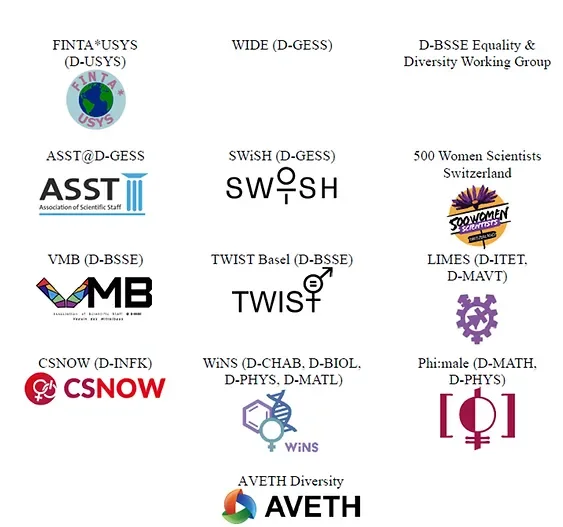

Open letter
An Open Letter Regarding “Leaky Pipeline in der Wissenschaft”
This open letter contains the collective response of AVETH and other ETH-affiliated organiza-tions (listed in the signatures) to the recent interview, first published in a news outlet on 06.05.2023, regarding the results of a study on the “causes of the leaky pipeline” in academia led by Prof. Margit Osterloh and Prof. Katja Rost at the University of Zurich (1,2). Notably, the authors shared the conclusions of their studies with a national media outlet before the work had been openly published or peer-reviewed, raising many questions from the academic com-munity about their research and publishing practices. The contents of their interview were sub-sequently published by additional journalists at other media outlets, a number of which posted provocative headlines and further misappropriated the unpublished results.
While other ETH bodies have already published statements regarding this situation (including the ETH Vice President of Personnel Leadership and Development, the ETH University As-sembly, and the Women Professors Forum (3-5)), we feel compelled to share our perspective on the situation as the students and employees this study specifically surveyed and targeted. We disagree with the authors’ focal conclusions and recommendations discussed in the inter-view, including the statements from Prof. Osterloh: Women make fewer careers because they have fewer career ambitions, discrimination and/or difficult conditions are irrelevant, and women are persuaded that they are being discriminated against. Our disagreement with these conclusions comes not only from our personal experiences in this matter, but also from various concerns with the study itself (highlighted briefly in the following paragraph) and extensive, peer-reviewed literature and other relevant surveys that demonstrate the pervasiveness of dis-crimination, institutionalized gender norms and stereotypes, and lack of recognition/compen-sation for care responsibilities that pose barriers for many in pursuing careers in combination with other personal and family obligations (7-15). Importantly, we highlight the list of recent accomplishments of our community in actively combating these barriers to make ETH a more pleasant, just, and equitable learning and working environment for all. These effective commu-nity-lead actions toward addressing and solving issues regarding the “leaky pipeline” stand in strong opposition to the authors’ unsubstantiated proposals from a short online survey.
Others have pointed out several concerns related to the design, analysis, and interpretation of the results of the study (a version has been only recently published online, 1). Criticisms of the study generally include but are not limited to: (i) the use of leading/suggestive survey descrip-tions and questions that reinforce common gender stereotypes, (ii) inadequate explanations of social phenomena concerning gender and gender norms/biases, (iii) questionable methodology and comparison to relevant peer-reviewed research on the topic, (iv) the narrowness of the study’s scope used to extrapolate to grand conclusions on a complex issue and the neglect of other important factors influencing participants responses (e.g., social norms), and (v) the de-meaning and unsupported comments of Prof. Osterloh in the original interview suggesting that educated women do not have the agency to think for themselves and identify discriminatory practices and their resulting effects on their personal and professional experiences. Therefore, we conclude that the main conclusions of the study are not supported.
The survey from Prof. Osterloh and Prof. Rost was circulated to ETH members in the Autumn Semester 2022. Many students who participated in the survey independently noted severe bi-ases in the survey formulation that they described as being “irritating”, “frustrating”, and “strange" while completing the survey (selected questions available, 6). These feelings have been amplified after the unexpected interview discussing the conclusions of this study and have left many of us feeling disappointed in Prof. Osterloh and Prof. Rost for not being more careful and responsible in designing, interpreting and communicating a study that has the potential to reinforce existing stereotypes within society and has the potential to result in less support for female researchers and students at ETH.
As professors of a leading institution in Switzerland, Prof. Osterloh and Prof. Rost must adhere to the highest standards of research integrity and practices, and it is unacceptable and irrespon-sible that these results were discussed with a media outlet without the study/data being first made publicly accessible. This goes beyond poor judgment on behalf of the authors and jour-nalists; this directly violates the scientific process and its principles that must be followed to prevent the perpetuation of false or unsupported conclusions. We echo the response of the Women Professors Forum for the adherence to best practices in reporting and publishing of scientific work, especially when the work is used to justify controversial opinions with far-reaching implications (5).
Whereas the actions of Prof. Osterloh and Prof. Rost greatly disappointed us, we want to em-phasize the positive efforts of our community that move productively toward the issues of the “leaky pipeline” and build the resources and infrastructure needed to ensure all members of our community have equitable opportunity at ETH. Here, we list number of recent community efforts:
1. ETH currently has 14 recognized women-based organizations active toward raising awareness, building networks, and providing support at ETH to improve working life. Most organizations are listed here (16).2. Feminist Strike Manifesto between UZH/ETH (17).3. 500 Women Scientists + WiNS meeting in January with ETH board to hear testimonies of sexism and misconduct faced still by many in their day-to-day at ETH, attended by over 50 PhD students. A summary and open letter is available online (18).4. Advocating for improved reporting systems to address misconduct at ETH (19).5. "Dealing with Sexual Harassment" course from the ETH Respect Campaign (20).6. Multiple career-development and mentoring programs targeted for young female re-searchers to bridge existing gaps in academia and industry (21) .
We understand and respect that the authors and journalists may have differing opinions than our own, and we welcome further discussion on this topic of the causes and implications of the “leaky pipeline”. However, the organizations in support of this letter (collectively representing thousands of scientific students and employees) want to make our views clear. Our collective lifelong experiences and genuine perspectives cannot be rewritten by an insubstantial 15 mi-nute survey with poorly rationalized and sensationalized conclusions. We are a community of ambitious, tenacious, and reflective students, researchers, and staff. We will not tolerate substandard demonstrations of research integrity, poor publishing practices, and misleadingjournalism. We possess the agency to recognize and call out issues regarding harassment, discrimination,and misconduct in the workplace. We will continue to work toward changing the status-quo and creating equitable opportunities for all members of all gender identities and backgrounds to pursue a scientific education career both at ETH and in our communities.
Signed:

References for News Articles & Statements1. https://www.suz.uzh.ch/de/institut/professuren/rost/Leaky-Pipline.html2.https://www.tagesanzeiger.ch/die-meisten-studentinnen-wollen-lieber-einen-erfolgreichen-mann-als-selber-karriere-machen-1657238341363.https://ethz.ch/staffnet/de/news-und-veranstaltungen/intern-aktuell/archiv/2023/05/forscherin-nen-und-studentinnen-mit-grossem-engagement-und-grossen-ambitionen.html4.https://www.blick.ch/schweiz/studie-zu-frauen-und-karriere-aufruhr-an-der-eth-id18574435.html?utm_source=twitter&utm_medium=social&utm_campaign=blick-page-post&utm_content=bot5. https://eth-wpf.ch/open-letter-on-the-study-leaky-pipeline-in-der-wissenschaft/6. https://reatch.ch/publikationen/equal-but-different?lang=de
References for Published Literature7. https://academic.oup.com/qje/article/137/4/2163/65811928. https://psycnet.apa.org/record/2005-05102-0029. https://researchrepository.wvu.edu/rri_pubs/222/10. https://journals.sagepub.com/doi/abs/10.1177/003804071882409511. https://docs.iza.org/dp11532.pdf
References for ETH/EPFL Surveys and Reports12.https://ethz.ch/staffnet/en/employment-and-work/working-environment/diversity/strategy-and-numbers/equality-monitoring.html13. https://vseth.ethz.ch/wp-content/uploads/2021/05/Abschlussbericht-final-en.pdf14. https://eth-wpf.ch/wp-content/uploads/2019/05/WPF-survey-report-2019.pdf15. https://www.epfl.ch/about/vice-presidencies/wp-content/uploads/2021/10/Summary_cul-ture_respect-2021-1.pdf
References for Community Action16.https://ethz.ch/staffnet/en/employment-and-work/working-environment/diversity/strategy-and-numbers/women-at-eth/female-associations.html17.https://vpod.ch/campa/femstreik-uzh/18.https://www.500womenscientistszurich.org/post/eth-president-meets-doctoral-students, https://wins.ethz.ch/wp-content/uploads/2023/02/Open-Letter-to-ETH-Board_WiNS.pdf19. https://universities-against-harassment.ch/en/ressourcen/wins/20. https://respekt.ethz.ch/en/21. https://www.fix-the-leaky-pipeline.ch/ , https://www.connect-women.ch/, https://blogs.ethz.ch/feminno/